目錄
用了Azure DevOps 一陣子後會發現如果我機器在地端呢？
好在微軟本身就已考慮這個情況，這篇文章來介紹不管是地端VM或實體Server能透過幾步驟輕鬆完成CD的機器連結設定!
1. 設定步驟
這邊先確認一下要設定的機器環境的OS部分，微軟很棒的針對了Windows、Linux、macOS都有對應的Agent可以設定安裝。
以下針對Widows 和Linux 敘述
1.1 Windows agnet 安裝
1.1.1 首先確認一下需安裝的環境版本，避免無法成功安裝Agent
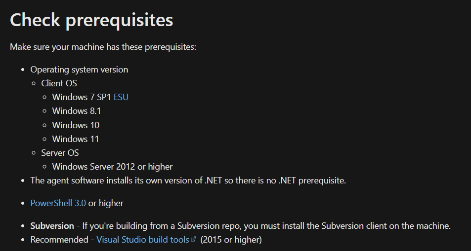
1.1.2 至Azure DevOps右上 “User settings” 選擇 “Personal Access Tokens”
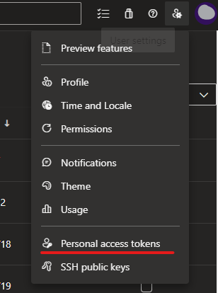
1.1.3 點擊"New Token" –> 填寫 “Token” 名稱並針對Agent Polls 區塊 “Read” 和 “Read & manage” 打勾(若沒看到可以點一下Show all scopes 即可找到) 並建立
- 填寫 和勾選Agent pools區塊

- Agent Pools 區塊
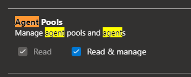
- 建立成功(注意這組Token 要存起來後續設定會用到)
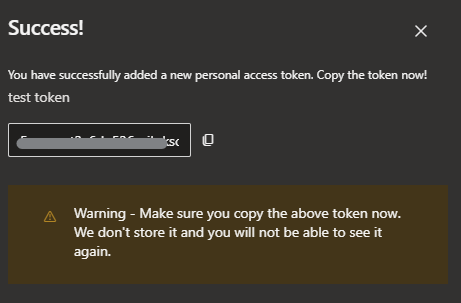
1.1.4 回到Azure DevOps Project 進到 “Deployment groups” 進行相關操作
- 點擊 “New” 並填寫設定名稱
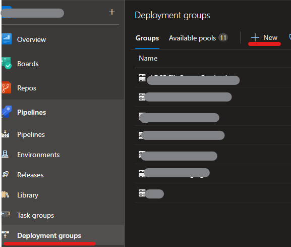
- 複製畫面script 貼至欲安裝agnet環境的PowerShell中執行(administrator)
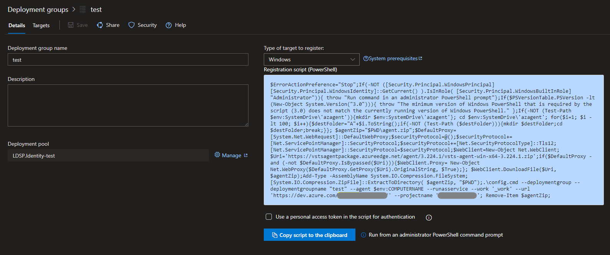
- 輸入1.1.3 拿到的Token
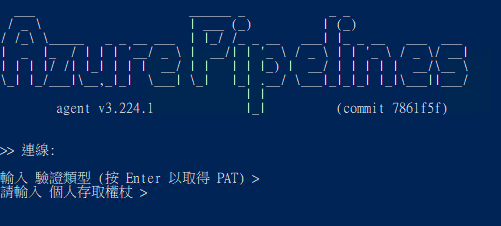
- 輸入群組標籤(依照需求選填)
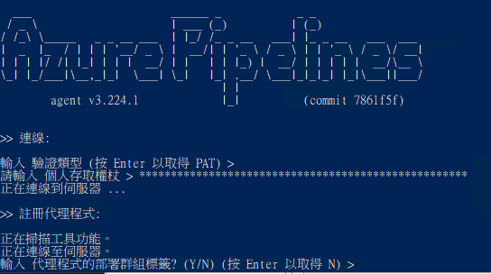
- 啟用背景代理服務(agent 服務自動於windows 背景執行)
- 輸入服務的使用者帳戶(預設為NT AUTHORITY\SYSTEM，此帳號權責很大可依照情況自行調整)
- 最後會在詢問"是否防止設定完直接啟動"(依照自己需求調整)，都完成後會看到服務成功啟動！
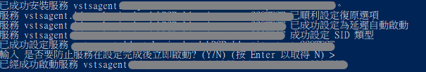
- 查看服務狀態(services.msc)
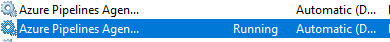
- Azure DevOps Pipelines - Deployment groups 會看到剛設定完的agent 狀態為"Online"
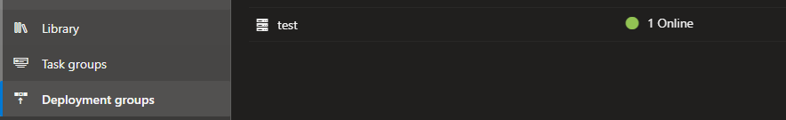
1.2 Linux agnet 安裝
1.2.1 同windows 安裝，確認一下環境
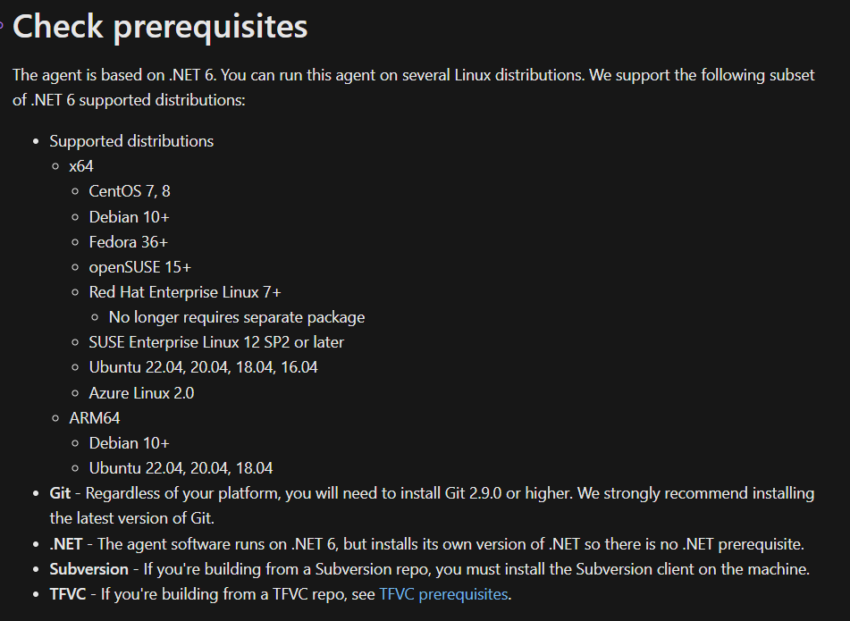
1.2.2 取得Personal Access Token 和進到Deployment groups 設定 (詳細步驟同1.1.2~1.1.4)
- 複製 Linux agent script 貼至欲安裝agnet環境的shell中執行(sudo)

- 輸入1.1.3 拿到的Token
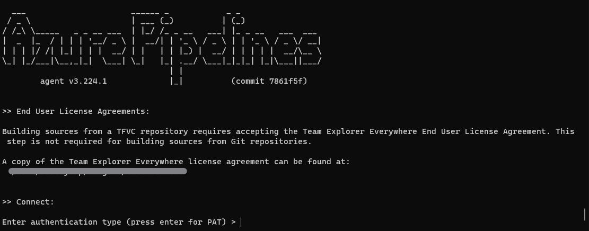
- 輸入群組標籤(依照需求選填)
- 啟用背景代理服務(agent 服務自動於Linux背景執行)
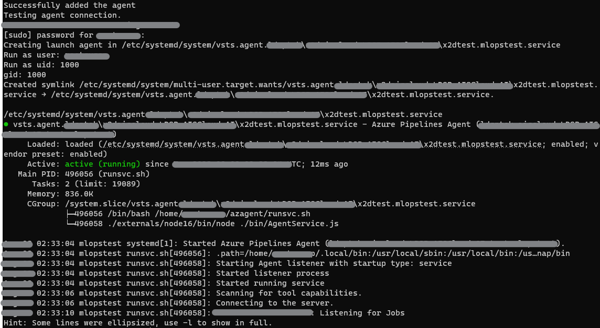
- Azure DevOps Pipelines - Deployment groups 會看到剛設定完的agent 狀態為"Online"
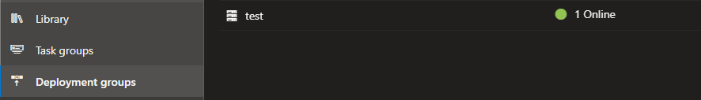
2. Azure DevOps Pipelines 部署調整
設定完機器連接後，回到Azure DevOps - Pipelines(Release) CD 的Task Job 相關設定中 可以看到Deployment group 可以選設定完的地端機器了！
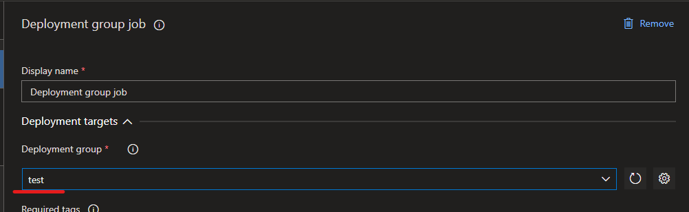
Deployment gruop 也有提供基本的部署狀況資料供人員掌握情況
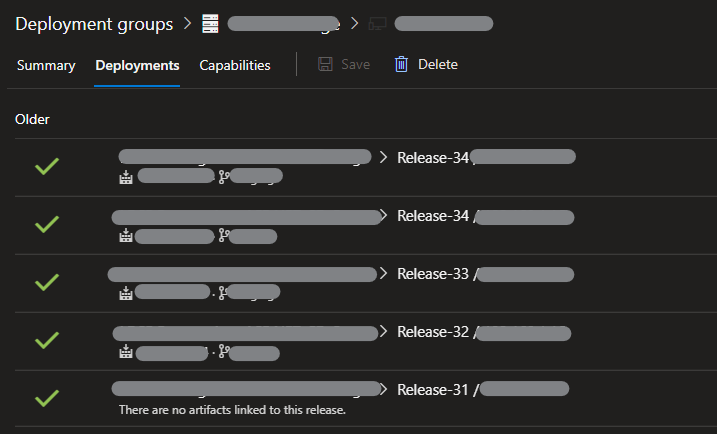